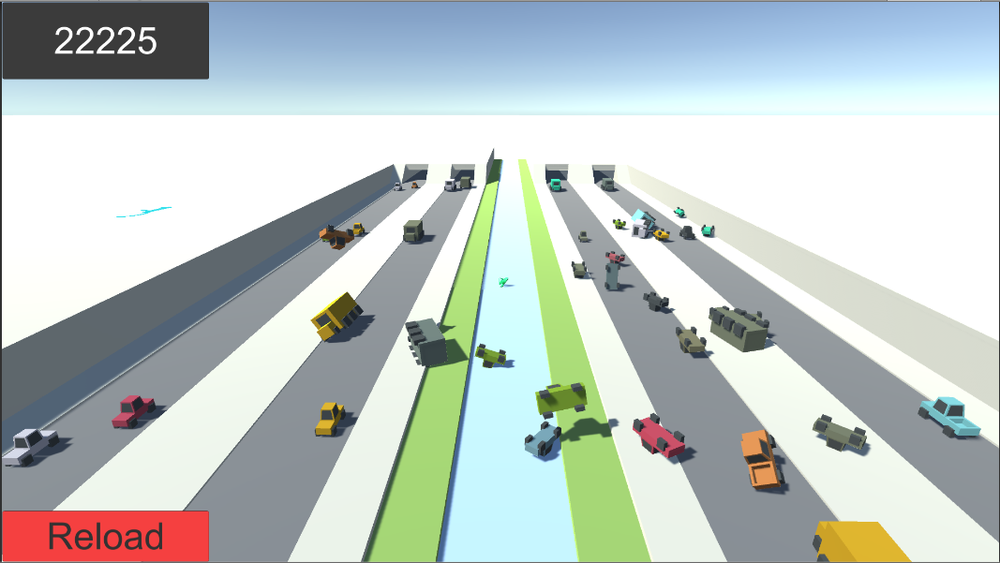
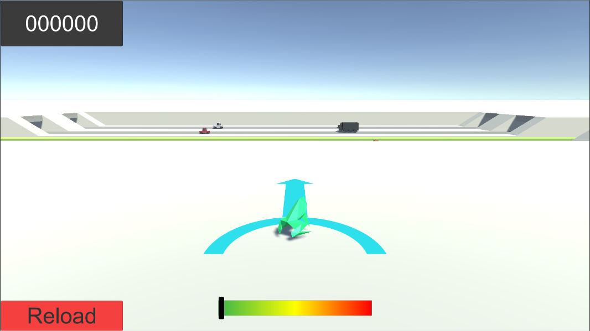
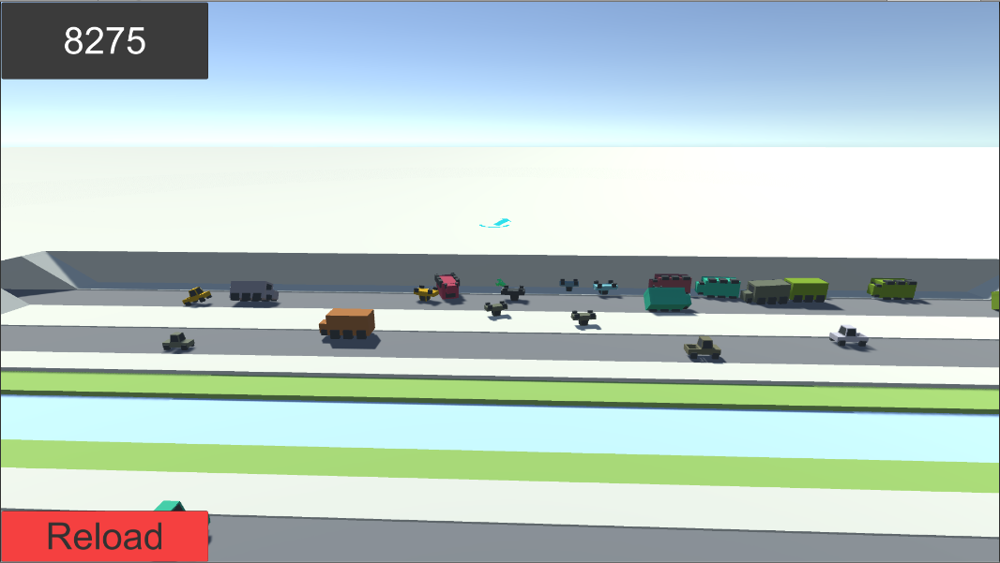

Amphibian Annihilation
XKCD Game Jam Entry
Amphibian Annihilation was my submission to the
2018 XKCD Game Jame. Inspired by
XKCD #772, the object of the game is to cause the biggest crash possible by throwing a frog into traffic. Collisions give you points and extend the crash.
After spending a great deal of time attempting to create complex games, I used the XKCD game jam to create a simpler, more casual experience with Amphibian Annihilation, and it worked. Users voted Amphibian Annihilation the 14th Most Fun game of the XKCD Game Jam, and the 31st best overall game out of 90 entries. Though the mechanics and design of Amphibian Annihilation are simple, I consider it to be one of my best games.
Amphibian Anihilation can be downloaded from
here. Mac and PC versions are available.
2 / 4

Rendered Section
3 / 4

Abstract Section
4 / 4

Abstract Section
❮
❯